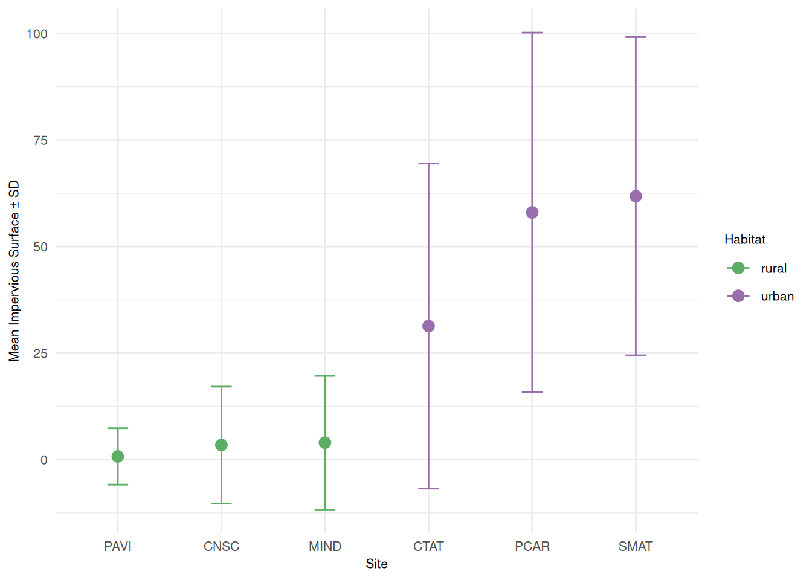
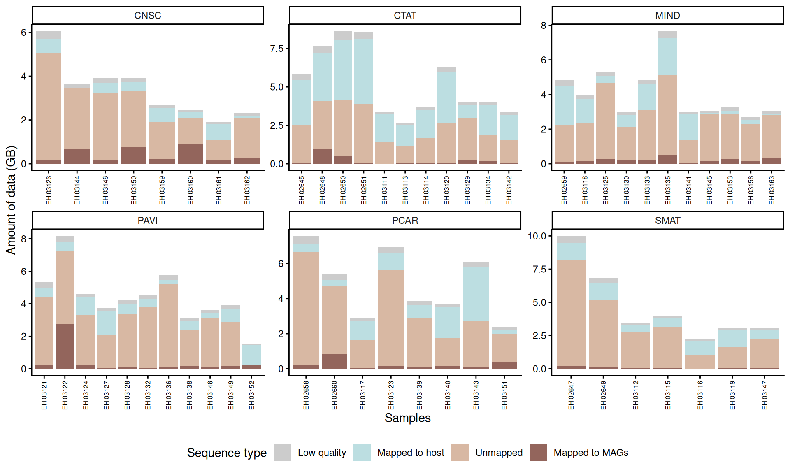
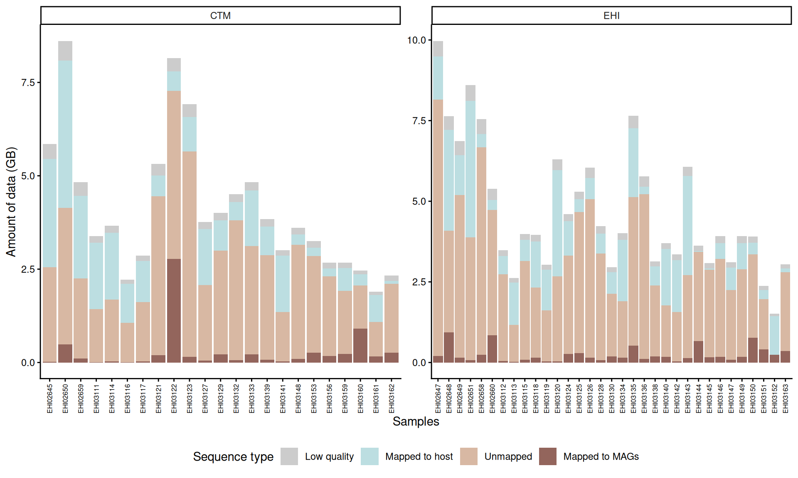
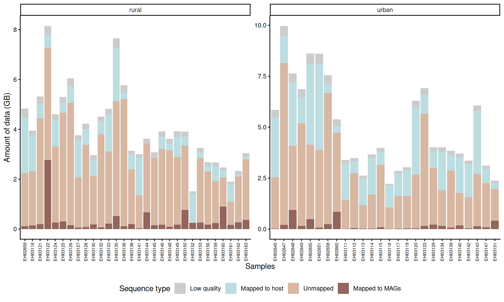
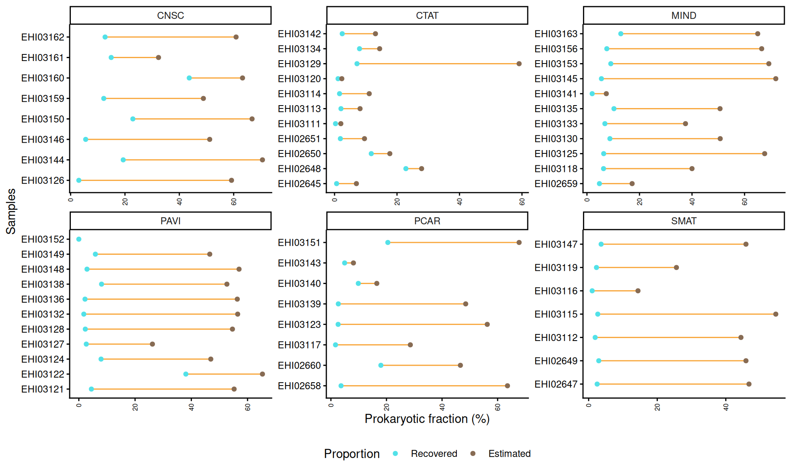
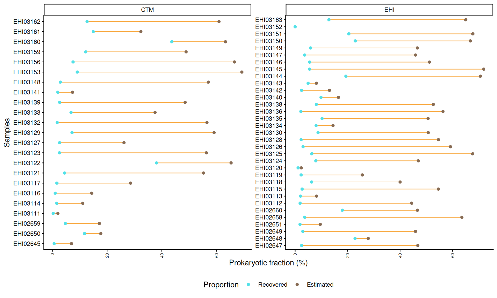
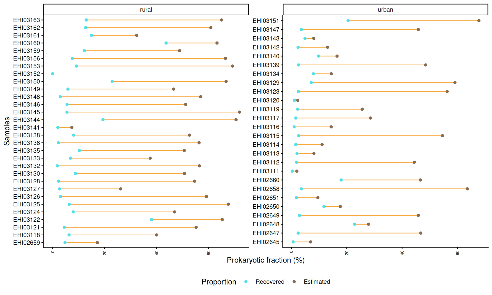
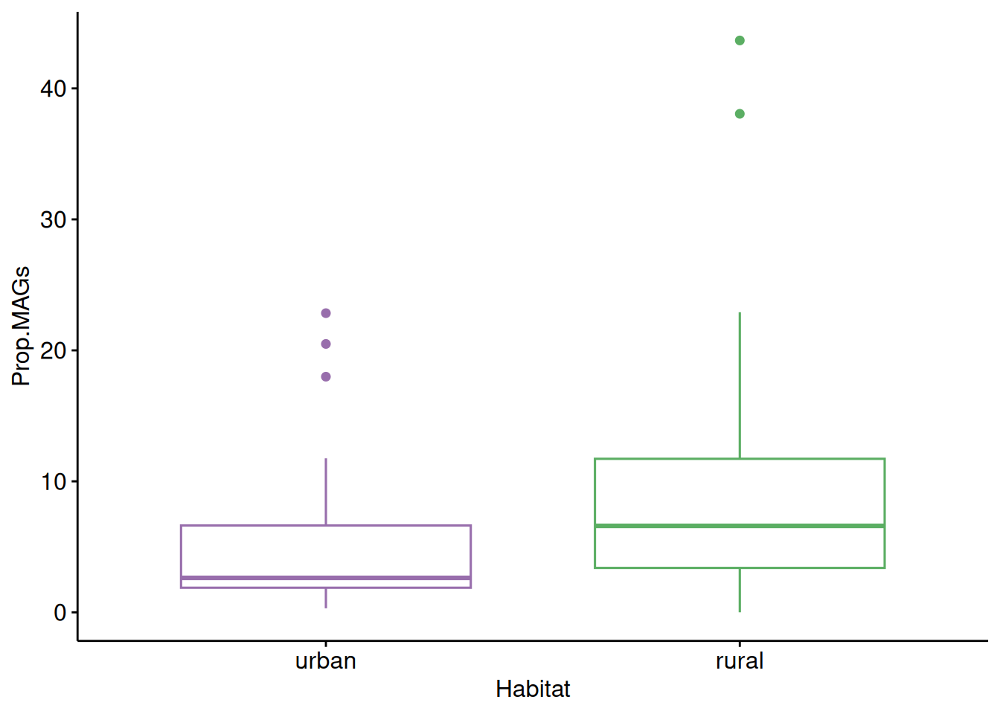
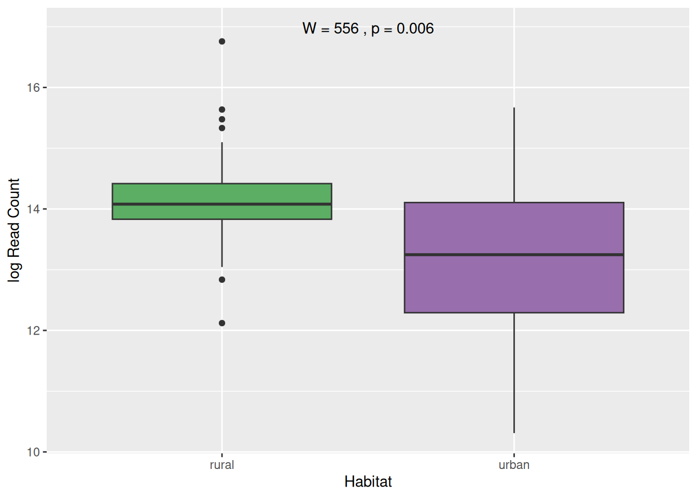

4 Data statistics
Load packages
pkgs = readRDS("data/Rpkgs.Rds")
install.packages(setdiff(pkgs, rownames(installed.packages())))
lapply(pkgs, require, character.only = TRUE)[[1]]
[1] TRUE
[[2]]
[1] TRUE
[[3]]
[1] TRUE
[[4]]
[1] TRUE
[[5]]
[1] TRUE
[[6]]
[1] TRUE
[[7]]
[1] TRUE
[[8]]
[1] TRUE
[[9]]
[1] TRUE
[[10]]
[1] TRUE
[[11]]
[1] TRUE
[[12]]
[1] TRUE
[[13]]
[1] TRUE
[[14]]
[1] TRUE
[[15]]
[1] TRUE
[[16]]
[1] TRUE
[[17]]
[1] TRUE
[[18]]
[1] TRUE
[[19]]
[1] TRUE
[[20]]
[1] TRUE
[[21]]
[1] TRUE
[[22]]
[1] TRUE
[[23]]
[1] TRUE
[[24]]
[1] TRUE
[[25]]
[1] TRUE
[[26]]
[1] TRUE
[[27]]
[1] TRUE
[[28]]
[1] TRUE
[[29]]
[1] TRUE
[[30]]
[1] TRUE
[[31]]
[1] TRUE
[[32]]
[1] TRUE
[[33]]
[1] TRUE
[[34]]
[1] TRUE
[[35]]
[1] TRUE
[[36]]
[1] TRUE
[[37]]
[1] TRUE
[[38]]
[1] TRUE
[[39]]
[1] TRUE
[[40]]
[1] TRUE
[[41]]
[1] TRUE
[[42]]
[1] TRUE
[[43]]
[1] TRUE
[[44]]
[1] TRUE
[[45]]
[1] TRUE
[[46]]
[1] TRUE
[[47]]
[1] TRUE
[[48]]
[1] TRUEload("data/data.Rdata")
# keep sample metadatabut rewrite with filters
sample_metadata = sample_metadata3query_variables = c("sample","event_id","swab","sol","habitat")
query_variables = query_variables[sapply(sample_metadata[,query_variables], function(x) length(unique(x))) > 1 ] # varaibles with at least two conditions4.1 Habitat Characterization
site_metadata =
read.csv("data/site_IMD.csv") %>%
mutate(Habitat = c("urban","urban","rural","rural","rural","urban")) %>%
arrange(X_imdmean) %>%
mutate(Site = as.factor(Sampling.e)) %>%
select(Site,Habitat,X_imdmean,X_imdstdev)
ggplot(site_metadata,
aes(x = reorder(Site,X_imdmean), y = X_imdmean, color = Habitat)) +
geom_point(size = 3) +
geom_errorbar(aes(ymin = X_imdmean - X_imdstdev,
ymax = X_imdmean + X_imdstdev),
width = 0.2) +
scale_color_manual(values = c("#5bae63","#986eac")) +
labs(x = "Site",
y = "Mean Impervious Surface ± SD") +
theme_minimal() +
theme(text=element_text(size=8), #change font size of all text
axis.text=element_text(size=8), #change font size of axis text
axis.title=element_text(size=8), #change font size of axis titles
plot.title=element_text(size=8), #change font size of plot title
legend.text=element_text(size=8), #change font size of legend text
legend.title=element_text(size=8)) #change font size of legend title
# Welch t-test (var.equal = FALSE is the default)
t.test(
site_metadata[site_metadata$Habitat=="urban","X_imdmean"],
site_metadata[site_metadata$Habitat=="rural","X_imdmean"]
)
Welch Two Sample t-test
data: site_metadata[site_metadata$Habitat == "urban", "X_imdmean"] and site_metadata[site_metadata$Habitat == "rural", "X_imdmean"]
t = 4.947, df = 2.0428, p-value = 0.0369
alternative hypothesis: true difference in means is not equal to 0
95 percent confidence interval:
7.033227 88.337010
sample estimates:
mean of x mean of y
50.39158 2.70646 4.2 [OPTIONAL] filter samples with high host data
This step would remove samples with a high proportion of host DNA. While using dermal swabs, most samples will have high host data, so consider this step only if a few samples appear to be outliers.
read_counts <- read_counts %>%
select(one_of(c("genome",sample_metadata$sample)))%>%
filter(rowSums(. != 0, na.rm = TRUE) > 0) %>%
select_if(~!all(. == 0))
genome_metadata <- genome_metadata %>%
semi_join(., read_counts, by = "genome") %>%
arrange(match(genome,read_counts$genome))
genome_tree <- keep.tip(genome_tree, tip=genome_metadata$genome) # keep only MAG tips
head(genome_metadata)
# save results for supplementary materials.
write_rds(genome_metadata,
"./high_host_data_genome_metadata.Rds")4.3 Sequencing reads statistics
The total number of post-fastp bases (ie. number reads * 150) in billions, and the average number of bases among samples.
# sequence reads by 1M
sample_metadata %>%
summarise(Total=sum(reads_post_fastp / 1000000) %>% round(2),
mean=mean(reads_post_fastp / 1000000) %>% round(2),
sd=sd(reads_post_fastp / 1000000) %>% round(2)) %>%
unite("Average",mean, sd, sep = " ± ", remove = TRUE) %>%
tt()| Total | Average |
|---|---|
| 1611.25 | 28.77 ± 12.44 |
# sequence Gbases
sample_metadata %>%
summarise(Total=sum(reads_post_fastp * 150 / 1000000000) %>% round(2),
mean=mean(reads_post_fastp * 150 / 1000000000) %>% round(2),
sd=sd(reads_post_fastp * 150 / 1000000000) %>% round(2)) %>%
unite("Average",mean, sd, sep = " ± ", remove = TRUE) %>%
tt()| Total | Average |
|---|---|
| 241.69 | 4.32 ± 1.87 |
4.4 DNA fractions
sequence_fractions <- read_counts %>%
pivot_longer(-genome, names_to = "sample", values_to = "value") %>%
group_by(sample) %>%
summarise(mags = sum(value)) %>%
left_join(sample_metadata, by = join_by(sample == sample)) %>%
select(sample,mags,metagenomic_bases,host_bases,bases_lost_fastp_percent) %>%
mutate(mags_bases = mags*146) %>%
mutate(lowqual_bases = ((metagenomic_bases+host_bases)/(1-bases_lost_fastp_percent))-(metagenomic_bases+host_bases)) %>%
mutate(unmapped_bases = metagenomic_bases - mags_bases) %>%
mutate(unmapped_bases = ifelse(unmapped_bases < 0, 0, unmapped_bases)) %>%
select(sample, lowqual_bases, host_bases, unmapped_bases, mags_bases) %>%
na.omit()
cat(paste(
# bases mapped to MAGs
"mean Gb mapped to MAGs = ",round(mean(sequence_fractions$mags_bases/1e9),2),
"±",round(sd(sequence_fractions$mags_bases/1e9),2),
"---",
# low quality bases
"mean Gb of low quality bases = ",round(mean(sequence_fractions$lowqual_bases/1e9),2),
"±",round(sd(sequence_fractions$lowqual_bases/1e9),2),
"---",
# host bases
"mean Gb of host bases = ",round(mean(sequence_fractions$host_bases/1e9),2),
"±",round(sd(sequence_fractions$host_bases/1e9),2),
"---",
# unmapped bases
"mean Gb of unmapped bases = ",round(mean(sequence_fractions$unmapped_bases/1e9),2),
"±",round(sd(sequence_fractions$unmapped_bases/1e9),2)
), file = "data/GB_summary.txt")
sequence_fractions %>%
mutate_at(vars(-sample), ~./1000000000) %>%
rename("Sample"=1, "Low quality"=2, "Mapped to host"=3, "Unmapped"=4, "Mapped to MAGs"=5) %>%
tt()| Sample | Low quality | Mapped to host | Unmapped | Mapped to MAGs |
|---|---|---|---|---|
| EHI02645 | 0.39922195 | 2.90368805 | 2.5324364 | 0.016704736 |
| EHI02647 | 0.47832126 | 1.33463280 | 7.9542331 | 0.202542442 |
| EHI02648 | 0.42674601 | 3.13160472 | 3.1515559 | 0.932833712 |
| EHI02649 | 0.43652964 | 1.23599673 | 5.0389065 | 0.153319856 |
| EHI02650 | 0.52700973 | 3.94143146 | 3.6548010 | 0.487298068 |
| EHI02651 | 0.48242831 | 4.23379655 | 3.8103341 | 0.072785380 |
| EHI02658 | 0.46228251 | 0.41411565 | 6.4293755 | 0.244056958 |
| EHI02659 | 0.37102280 | 2.20844992 | 2.1453768 | 0.106965148 |
| EHI02660 | 0.34389140 | 0.31129486 | 3.8781758 | 0.850452628 |
| EHI03111 | 0.18314979 | 1.77016491 | 1.4297268 | 0.004384234 |
| EHI03112 | 0.17171304 | 0.57657098 | 2.6782907 | 0.051851170 |
| EHI03113 | 0.13663161 | 1.31405625 | 1.1457103 | 0.024039776 |
| EHI03114 | 0.18782278 | 1.79130826 | 1.6609762 | 0.027054092 |
| EHI03115 | 0.18954852 | 0.65374445 | 3.0607960 | 0.083488786 |
| EHI03116 | 0.10795599 | 1.04813355 | 1.0528534 | 0.010999786 |
| EHI03117 | 0.13767396 | 1.09918884 | 1.5942101 | 0.026883126 |
| EHI03118 | 0.19842074 | 1.43355599 | 2.1749329 | 0.146481070 |
| EHI03119 | 0.15115429 | 1.26889708 | 1.5756714 | 0.036698268 |
| EHI03120 | 0.33340860 | 3.28270284 | 2.6475465 | 0.030319528 |
| EHI03121 | 0.31457926 | 0.55590078 | 4.2494929 | 0.198885434 |
| EHI03122 | 0.35951347 | 0.51602562 | 4.5080956 | 2.769721470 |
| EHI03123 | 0.33777084 | 0.92703456 | 5.5050598 | 0.146737446 |
| EHI03124 | 0.21478647 | 1.06479152 | 3.0578251 | 0.262802628 |
| EHI03125 | 0.23211707 | 0.39570836 | 4.3721925 | 0.297402146 |
| EHI03126 | 0.32972149 | 0.65324334 | 4.9110249 | 0.153404536 |
| EHI03127 | 0.18933799 | 1.50688229 | 2.0171952 | 0.054826650 |
| EHI03128 | 0.23288659 | 0.62123343 | 3.2968361 | 0.077507312 |
| EHI03129 | 0.20254072 | 0.80983167 | 2.7787983 | 0.215115670 |
| EHI03130 | 0.16000438 | 0.66271402 | 1.9506779 | 0.186832112 |
| EHI03132 | 0.21703138 | 0.48916476 | 3.7389447 | 0.067476820 |
| EHI03133 | 0.22526978 | 1.48681732 | 2.9048659 | 0.213076050 |
| EHI03134 | 0.20968961 | 1.89943881 | 1.7466884 | 0.151851096 |
| EHI03135 | 0.38691950 | 2.14058674 | 4.5977252 | 0.526750334 |
| EHI03136 | 0.31326147 | 0.24062075 | 5.1007650 | 0.114943756 |
| EHI03138 | 0.15782070 | 0.59134581 | 2.1975857 | 0.193238592 |
| EHI03139 | 0.20260050 | 0.76590521 | 2.7978802 | 0.076838486 |
| EHI03140 | 0.18032486 | 1.76068324 | 1.5912777 | 0.174207346 |
| EHI03141 | 0.14814268 | 1.51062793 | 1.3225937 | 0.026807644 |
| EHI03142 | 0.17616299 | 1.61244700 | 1.5227046 | 0.038426908 |
| EHI03143 | 0.28552072 | 3.08000234 | 2.5719295 | 0.133893096 |
| EHI03144 | 0.17148385 | 0.01820516 | 2.7701581 | 0.665238926 |
| EHI03145 | 0.15908264 | 0.04586379 | 2.7138559 | 0.158387954 |
| EHI03146 | 0.22198371 | 0.49151733 | 3.0283582 | 0.177908008 |
| EHI03147 | 0.15605319 | 0.69783367 | 2.1668557 | 0.081897970 |
| EHI03148 | 0.18449978 | 0.27122483 | 3.0640987 | 0.091911818 |
| EHI03149 | 0.22259422 | 0.80512314 | 2.7230007 | 0.170485952 |
| EHI03150 | 0.18909986 | 0.36465680 | 2.5851086 | 0.768260614 |
| EHI03151 | 0.12795115 | 0.27994197 | 1.5630597 | 0.402879116 |
| EHI03152 | 0.06910231 | 1.19495519 | 0.0000000 | 0.245865168 |
| EHI03153 | 0.18388699 | 0.22143488 | 2.5896639 | 0.258752150 |
| EHI03156 | 0.15280574 | 0.21399783 | 2.1344822 | 0.174475402 |
| EHI03159 | 0.13584511 | 0.61144575 | 1.6874208 | 0.234542576 |
| EHI03160 | 0.10386711 | 0.29663728 | 1.1635932 | 0.901800974 |
| EHI03161 | 0.09119141 | 0.72255223 | 0.9249058 | 0.162488072 |
| EHI03162 | 0.14736581 | 0.07498610 | 1.8414904 | 0.267724434 |
| EHI03163 | 0.14079372 | 0.11037946 | 2.4387771 | 0.360737384 |
sequence_fractions %>%
mutate_at(vars(-sample), ~./1000000000) %>%
rename("Sample"=1, "Low quality"=2, "Mapped to host"=3, "Unmapped"=4, "Mapped to MAGs"=5) %>%
summarise(across(where(is.numeric), mean, na.rm = TRUE)) %>%
tt()Warning: There was 1 warning in `summarise()`.
ℹ In argument: `across(where(is.numeric), mean, na.rm =
TRUE)`.
Caused by warning:
! The `...` argument of `across()` is deprecated as of dplyr
1.1.0.
Supply arguments directly to `.fns` through an anonymous
function instead.
# Previously
across(a:b, mean, na.rm = TRUE)
# Now
across(a:b, \(x) mean(x, na.rm = TRUE))| Low quality | Mapped to host | Unmapped | Mapped to MAGs |
|---|---|---|---|
| 0.2367597 | 1.136877 | 2.81698 | 0.2627368 |
for (q in seq_along(query_variables)[-1]){
#sequence_fractions %>%
print(
merge(sequence_fractions, sample_metadata[,query_variables],by = "sample") %>%
#pivot_longer(!sample, names_to = "fraction", values_to = "value") %>%
pivot_longer(!c(query_variables), names_to = "fraction", values_to = "value") %>%
mutate(value = value / 1000000000) %>%
mutate(fraction = factor(fraction, levels = c("lowqual_bases","host_bases","unmapped_bases","mags_bases"))) %>%
ggplot(., aes(x = sample, y = value, fill=fraction)) +
geom_bar(position="stack", stat = "identity") +
scale_fill_manual(name="Sequence type",
breaks=c("lowqual_bases","host_bases","unmapped_bases","mags_bases"),
labels=c("Low quality","Mapped to host","Unmapped","Mapped to MAGs"),
values=c("#CCCCCC", "#bcdee1", "#d8b8a3","#93655c"))+
facet_wrap(as.formula(paste("~", query_variables[q])),scales = "free") +
labs(x = "Samples", y = "Amount of data (GB)") +
theme_classic() +
theme(axis.text.x = element_text(angle = 90, vjust = 0.5, hjust = 1, size=6),legend.position = "bottom")
)
}


What proportion of reads were mapped to MAGs compared to host/unmapped?
paste(
"average % MAG bases",
round(mean( 100 *
sequence_fractions$mags_bases / # MAG bases
rowSums(sequence_fractions[,-1]) # total bases
),3),
" ± ",
round(sd( 100 *
sequence_fractions$mags_bases / # MAG bases
rowSums(sequence_fractions[,-1]) # total bases
),3)
)[1] "average % MAG bases 6.129 ± 7.476"paste(
"average % host & unmapped bases",
round(mean( 100 *
(sequence_fractions$host_bases + sequence_fractions$unmapped_bases) / # host bases
rowSums(sequence_fractions[,-1]) # total bases
),3),
" ± ",
round(sd( 100 *
(sequence_fractions$host_bases + sequence_fractions$unmapped_bases) / # host bases
rowSums(sequence_fractions[,-1]) # total bases
),3)
)[1] "average % host & unmapped bases 88.614 ± 7.336"4.5 Recovered microbial fraction
The mags_proportion refers to the proportion of the sequence bases not removed due to low quality or assigned to hosts, that were then assigned to MAGs. The singlem_proportion, estimates by SingleM, is an estimate of what proportion of the reads are prokaryotic.
singlem_table <- sequence_fractions %>%
mutate(mags_proportion = round((mags_bases / (mags_bases + unmapped_bases))*100,2)) %>%
left_join(sample_metadata, by = join_by(sample == sample)) %>%
mutate(singlem_proportion = round(singlem_fraction,2)) %>%
select(sample,mags_proportion,singlem_proportion) %>%
mutate(mags_proportion = ifelse(singlem_proportion == 0, 0, mags_proportion)) %>% #convert zeros to NA
mutate(singlem_proportion = ifelse(singlem_proportion == 0, NA, singlem_proportion)) %>% #convert zeros to NA
mutate(singlem_proportion = ifelse(singlem_proportion < mags_proportion, NA, singlem_proportion)) %>% #if singlem is smaller, then NA, to simplify plot
mutate(singlem_proportion = ifelse(singlem_proportion > 100, 100, singlem_proportion)) #simplify
for (q in seq_along(query_variables)[-1]){
print(
merge(singlem_table, sample_metadata[,query_variables],by = "sample") %>%
#pivot_longer(!sample, names_to = "proportion", values_to = "value") %>%
pivot_longer(!c(query_variables), names_to = "proportion", values_to = "value") %>%
mutate(proportion = factor(proportion, levels = c("mags_proportion","singlem_proportion"))) %>%
ggplot(., aes(x = value, y = sample, color=proportion)) +
geom_line(aes(group = sample), color = "#f8a538") +
geom_point() +
scale_color_manual(name="Proportion",
breaks=c("mags_proportion","singlem_proportion"),
labels=c("Recovered","Estimated"),
values=c("#52e1e8", "#876b53"))+
facet_wrap(as.formula(paste("~", query_variables[q])),scales = "free") +
theme_classic() +
labs(y = "Samples", x = "Prokaryotic fraction (%)") +
theme(axis.text.x = element_text(angle = 90, vjust = 0.5, hjust = 1, size=6),legend.position = "bottom")
)}


paste(
"Mean estimated proportion of prokaryote bases", round(mean(na.omit(singlem_table$singlem_proportion)),2),"±",
round(sd(na.omit(singlem_table$singlem_proportion)),2)
)[1] "Mean estimated proportion of prokaryote bases 41.82 ± 21.49"paste(
"Mean proportion of based assigned to MAGs", round(mean(singlem_table$mags_proportion),2),"±", round(sd(singlem_table$mags_proportion),2)
)[1] "Mean proportion of based assigned to MAGs 7.71 ± 8.65"singlm_df= singlem_table %>%
left_join(sample_metadata[,colnames(sample_metadata) %in% query_variables], by = join_by(sample == sample))
wilcox.test(mags_proportion ~ habitat,
data = singlm_df)
Wilcoxon rank sum exact test
data: mags_proportion by habitat
W = 546, p-value = 0.009853
alternative hypothesis: true location shift is not equal to 0ggboxplot(singlm_df, x = "habitat", y = "mags_proportion",
color = "habitat", palette = c("#986eac","#5bae63"),
ylab = "Prop.MAGs", xlab = "Habitat") +
theme(legend.position = "none")
ggsave('figure/habitat_prop_mag.png', width=6, height=10, units='cm')
wilcox.test(mags_proportion ~ swab,
data = singlm_df)
Wilcoxon rank sum exact test
data: mags_proportion by swab
W = 348, p-value = 0.6084
alternative hypothesis: true location shift is not equal to 0# repeat comparison with pre-filter reads count
rural_read_count = colSums(
read_counts[,sample_metadata[sample_metadata$habitat == "rural","sample"]])
urban_read_count = colSums(
read_counts[,sample_metadata[sample_metadata$habitat == "urban","sample"]])
tmp_df = data.frame(
value = c(rural_read_count, urban_read_count),
group = factor(c(rep("rural", length(rural_read_count)),
rep("urban", length(urban_read_count)))))
# test for differences
tmp_wilcox =
wilcox.test(
rural_read_count,
urban_read_count
)
ggplot(tmp_df, aes(x = group, y = log(value), fill = group)) +
geom_boxplot(fill = c("#5bae63","#986eac")) +
ylab("log Read Count")+
xlab("Habitat") +
annotate("text", x = 1.5, y = log(max(tmp_df$value/.8)),
label = paste("W =",round(tmp_wilcox$statistic,3),
", p =",round(tmp_wilcox$p.value,3)))
<theme> List of 1
$ legend.position: chr "none"
@ complete: logi FALSE
@ validate: logi TRUESaving 7 x 5 in imageDomain-Adjusted Mapping Rate (DAMR) is a metric to assess microbial genome recovery from metagenomes, calculated as the rate of read mapping to sets of microbial genomes (MAGs or other references) divided by the fraction of the community predicted to be bacterial or archaeal (here with SMF). (Eisenhofer_2024?)
damr <- singlem_table %>%
mutate(damr=ifelse(is.na(singlem_proportion),100,mags_proportion/singlem_proportion*100)) %>%
select(sample,damr)
damr %>%
left_join(sample_metadata, by = join_by(sample == sample)) %>%
summarise(mean=mean(damr),sd=sd(damr)) %>%
tt()| mean | sd |
|---|---|
| 22.98628 | 22.19636 |
damr %>%
left_join(sample_metadata, by = join_by(sample == sample)) %>%
summarise(mean=mean(damr),sd=sd(damr)) %>%
tt()| mean | sd |
|---|---|
| 22.98628 | 22.19636 |
| sample | damr |
|---|---|
| EHI02645 | 9.428571 |
| EHI02647 | 5.303678 |
| EHI02648 | 81.951920 |
| EHI02649 | 6.429817 |
| EHI02650 | 66.440678 |
| EHI02651 | 19.499479 |
| EHI02658 | 5.759245 |
| EHI02659 | 27.616279 |
| EHI02660 | 38.596868 |
| EHI03111 | 15.346535 |
| EHI03112 | 4.277353 |
| EHI03113 | 25.214198 |
| EHI03114 | 14.401440 |
| EHI03115 | 4.873580 |
| EHI03116 | 7.157748 |
| EHI03117 | 5.806226 |
| EHI03118 | 15.775000 |
| EHI03119 | 8.906250 |
| EHI03120 | 48.497854 |
| EHI03121 | 8.093427 |
| EHI03122 | 58.284839 |
| EHI03123 | 4.620579 |
| EHI03124 | 16.854890 |
| EHI03125 | 9.414721 |
| EHI03126 | 5.117379 |
| EHI03127 | 10.126099 |
| EHI03128 | 4.210141 |
| EHI03129 | 12.167880 |
| EHI03130 | 17.225069 |
| EHI03132 | 3.133298 |
| EHI03133 | 18.203625 |
| EHI03134 | 55.401662 |
| EHI03135 | 20.288139 |
| EHI03136 | 3.904170 |
| EHI03138 | 15.343714 |
| EHI03139 | 5.504020 |
| EHI03140 | 59.745763 |
| EHI03141 | 27.001357 |
| EHI03142 | 18.778626 |
| EHI03143 | 61.035758 |
| EHI03144 | 27.425981 |
| EHI03145 | 7.663421 |
| EHI03146 | 10.844080 |
| EHI03147 | 7.933740 |
| EHI03148 | 5.107055 |
| EHI03149 | 12.650344 |
| EHI03150 | 34.311817 |
| EHI03151 | 30.248007 |
| EHI03152 | 100.000000 |
| EHI03153 | 13.111913 |
| EHI03156 | 11.363295 |
| EHI03159 | 24.969300 |
| EHI03160 | 69.016756 |
| EHI03161 | 46.182380 |
| EHI03162 | 20.840861 |
| EHI03163 | 19.824669 |
[1] 1| mean | sd |
|---|---|
| 22.98628 | 22.19636 |